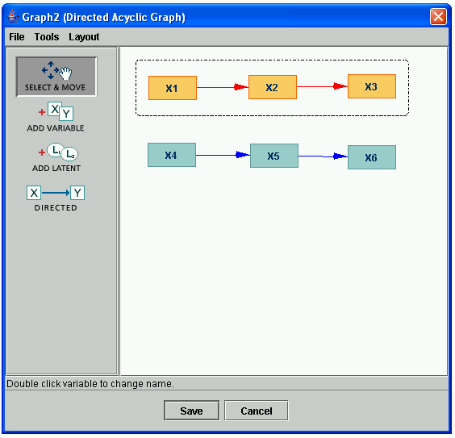

Selecting Groups of Nodes |
If you would like to move a whole section of nodes, to copy them or move them to another location, first draw a "rubberband" around them and either drag one of the nodes to drag the group or select the copy function from the Edit menu to copy the group.
To draw a rubberband around a group of nodes, first click in the white background to the upper left of the group of nodes, then drag the mouse down to the lower right of the group of nodes. The rubberband will be shown as a dotted box around the group, and all of the nodes in the group will be highlighted. It will look like this:

Once selected, this group of nodes may, for example, be dragged to another location by clicking on X3 and dragging it.